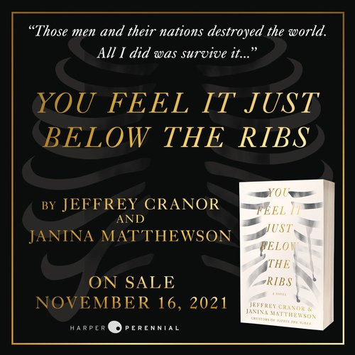
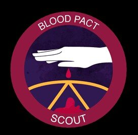

“THE FOUNDATIONAL INSTITUTION OF THE FICTION-PODCAST GENRE.”
- VULTURE
“WITH ITS UNCANNY BLEND OF THE MACABRE AND THE MUNDANE, THE NEWS OUT OF NIGHT VALE SOUNDS LIKE WHAT MIGHT OCCUR IF STEPHEN KING OR DAVID LYNCH WAS A GUEST PRODUCER AT YOUR LOCAL PUBLIC RADIO STATION.”
- NY TIMES
“...A PLACE WHERE A LOVE OF THE BIZARRE MEETS A LOVE OF LANGUAGE.”
- THE GUARDIAN

WELCOME TO NIGHT VALE is a twice-monthly podcast in the style of community updates for the small desert town of Night Vale, featuring local weather, news, announcements from the Sheriff's Secret Police, mysterious lights in the night sky, dark hooded figures with unknowable powers, and cultural events.
Turn on your radio and hide.
Episode Transcripts can be found here.
WELCOME TO NIGHT VALE IS PART OF THE NIGHT VALE PRESENTS NETWORK.
Welcome to Night Vale is made possible through the support of our fans and sponsors. Check out our sponsor codes for discounts and special offers! If you are interested in shopping with a Night Vale sponsor, using the Night Vale link and/or sponsor code helps show our sponsors you are listening
Apple Pay - “Ride the MTA with Apple Pay” in New York City. Add any credit card to your Apple Wallet, hold your iPhone or Apple watch near the reader and you can ride the bus, subway… you name it.
Aura Frames - Recommended by 130+ gift guides and twice selected by Oprah in Oprah’s Favorite Things, Aura is Wirecutter’s #1 pick in digital picture frames. Aura is having a special sale now exclusively offering listeners $30 Off their wifi digital frames with the code NIGHT. Visit auraframes.com to redeem.
Best Fiends – This unique and exciting puzzle game is unlike other games out there! Best Fiends updates the game monthly with new levels and events, so it never gets old! Find out more here.
BetterHelp Online Counseling - If you think you may be depressed, or you’re feeling overwhelmed or anxious, BetterHelp offers licensed, online counselors who are trained to listen and to help in a private, online environment –at your convenience. Listeners get 10% off your first month here.
Brooklinen - Beautiful, high-quality home essentials that don’t cost an arm and a leg. Buttery soft and breathable sheets; plush and absorbent towels; cozy robes; and comfy loungewear you’ll want to put on and never take off. Go to Brooklinen.com and use promo code nightvale to get $20 off (minimum purchase of $100).
Cat Person - Did you know cats are carnivores that need lots of meat? Cat Person is protein-packed (50% more than industry standards!), only uses wholesome ingredients, and ships right to your door. Use code nightvale at catperson.com/nightvale to get nearly 50% off your Starter Box with fee shipping.
Headspace - Headspace is your daily dose of mindfulness in the form of guided meditations in an easy-to-use app. One of the ONLY meditation apps advancing the field of mindfulness and meditation through clinically-validated research. Go to headspace.com/nightvale for a free one month trial.
Mint Mobile - Mint Mobile offers premium wireless service starting at just 15 bucks a month by cutting out retail stores and selling wireless service online only. All plans come with unlimited talk and text + high-speed data delivered on the nation’s largest 5G network. To get your new wireless plan for just 15 bucks a month, shipped to your door for FREE, click here.
Pretty Litter - Pretty Litter’s super light crystals trap odor, release moisture, and is virtually dust free - resulting in dry, low maintenance litter that doesn’t smell! It also monitors your cat’s health by changing colors when it detects potential underlying issues. Use promo code nightvale for 20% off your first order, delivered right to your door.
Progressive - Progressive has you covered when it comes to car insurance. You can save when you start your quote online or have multiple vehicles on your policy. Start a quote online and see all the discounts for yourself.
FEATURED
NEW NOVEL: YOU FEEL IT JUST BELOW THE RIBS
Nov 9, 2021
NEW MEMBER BENEFITS!
Aug 16, 2021
Sign up for our twice-monthly newsletter and get all the Night Vale news before anyone else. Know more than your friends. Lord it over them. Keep secrets from your loved ones. It all starts here:
BECOME A MEMBER
one- time donation